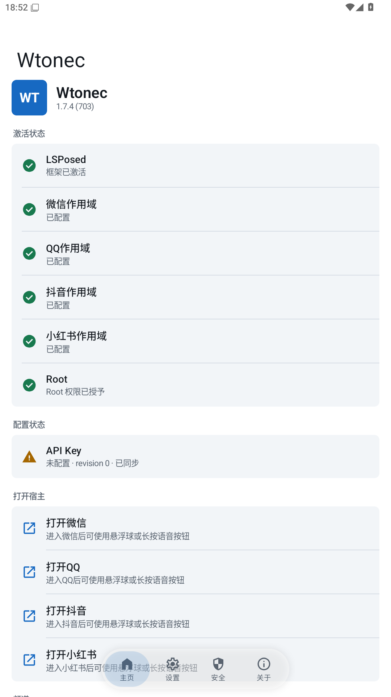
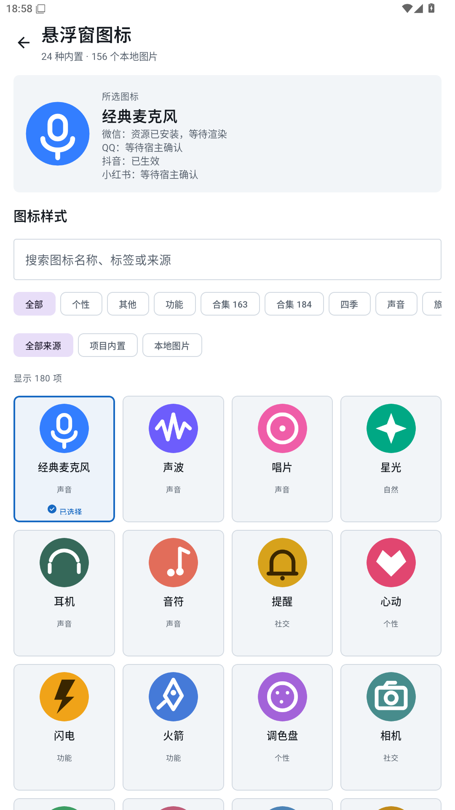
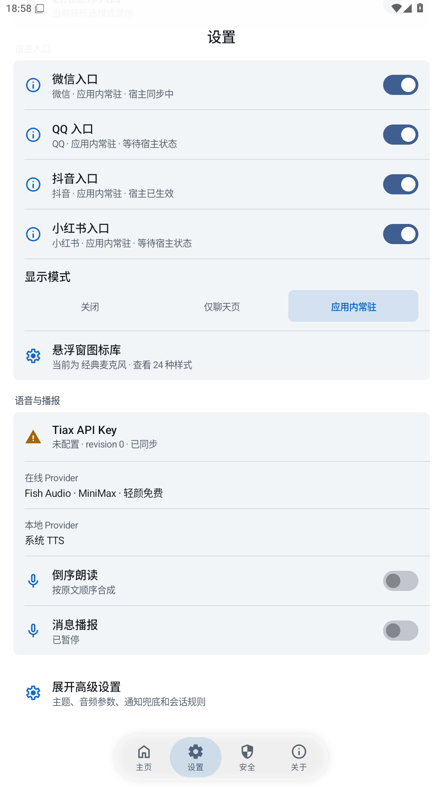

用喜欢的声音说话
选择音色、输入文字，试听满意后生成并发送。
WTONEC 1.7.4 · ANDROID
微信 / QQ / 小红书 / 抖音的语音与表情包工具。文字转语音、语音包、语音播报、克隆音色，上百款音色任你选择。
所有音色和功能免费使用，无需充值Android 9+ · ARM64 / ARMv7 · 约 14 MiB · 需要已配置的 LSPosed/Xposed 环境
从选择音色到发送语音，打开面板就能开始。
选择音色、输入文字，试听满意后生成并发送。
导入、收藏和管理语音包，聊天时快速找到。
按设置朗读通知消息，使用前开启所需权限。
创建或使用克隆音色，让文字拥有熟悉的声音。
管理常用表情，在私聊、群聊中轻松使用。
液态玻璃、多种主题、悬浮球和自定义图标。
1.7.4 · MuMu 模拟器实际截图



小红书、抖音加入，常用体验继续改进。
dev.wtonec.final，安装后请重新启用模块。